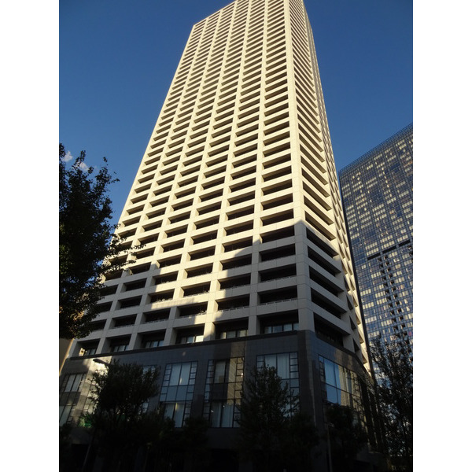
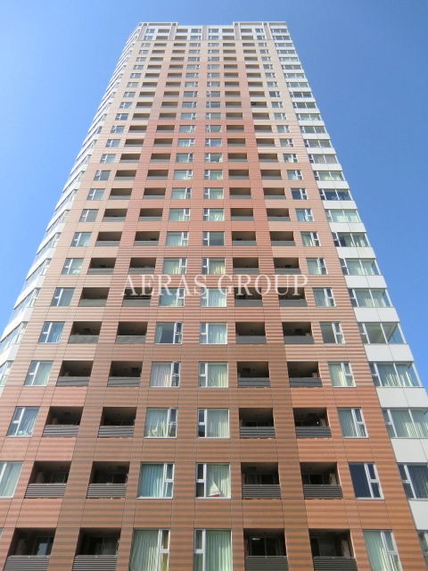
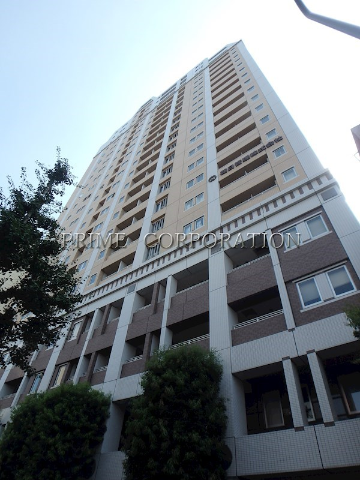
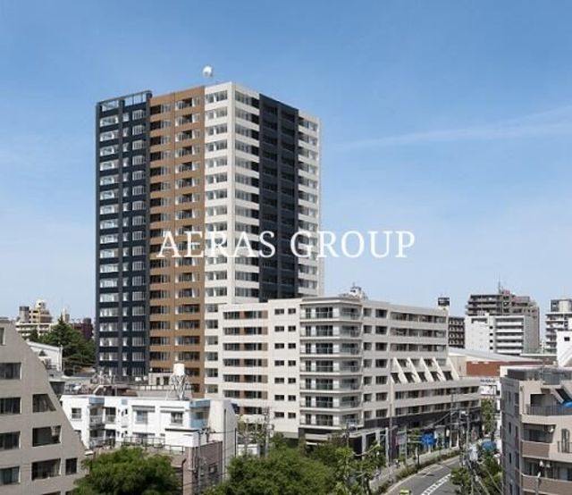
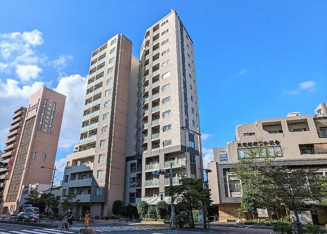

 ◎ 台地で安全🐾 ペットOK44階建 27.0万いちばん高層 新宿区 西新宿東京メトロ丸ノ内線「西新宿」駅 徒歩8分 コンシェリア西新宿 TOWER'S WEST 1LDK55.2㎡超高層44階 台地：淀橋台（西新宿）／都庁すぐの本格タワー。内陸で液状化リスク低。 SUUMOで見る ハザードマップ
 ◎ 台地で安全🐾 ペットOK32階建 23.7万池袋駅2分 豊島区 西池袋JR山手線「池袋」駅 徒歩2分 ウエストパークタワー池袋 1LDK50.1㎡駅2分の32階 台地：豊島台地／池袋2分の超駅近タワー。買い物・交通が最強クラス。 SUUMOで見る ハザードマップ
 ◎ 台地で安全🐾 ペットOK22階建 30.0万目黒駅6分 品川区 上大崎（目黒）JR山手線「目黒」駅 徒歩6分 アクロス目黒タワー 1LDK54.0㎡目黒のランドマーク 台地：上大崎（目黒台地）／目黒駅前の人気タワー。高台で安全。 SUUMOで見る ハザードマップ
 ◎ 台地で安全🐾 ペットOK22階建 23.0万コスパ◎ 豊島区 上池袋JR山手線「大塚」駅 徒歩10分 レジディアタワー上池袋 1SLDK55.1㎡22階で23万 台地：豊島台地／22階タワーで23万は割安。広めの1SLDK。 SUUMOで見る ハザードマップ
 ◎ 台地で安全🐾 ペットOK15階建 21.8万この中で最安 文京区 小石川東京メトロ南北線「後楽園」駅 徒歩5分 JPノイエ小石川富坂 1LDK50.5㎡都心・文京で安い 台地：小石川台地／後楽園5分の高層。文京区の都心立地で最安。 SUUMOで見る ハザードマップ